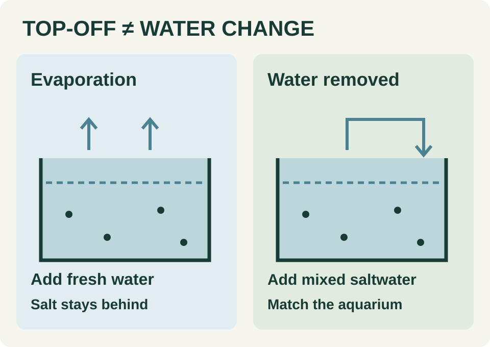

Evaporation removes water while leaving salt behind. Replace that loss with suitable freshwater, not another batch of saltwater. UF/IFAS specifies fresh reverse-osmosis water for this job. A water change is different: you deliberately remove aquarium water, including its dissolved salt, and replace it with prepared saltwater. Do not treat these two jobs as interchangeable bucket refills.13
Which job is it?
- Top-off: replace water lost through evaporation. Do not assume every unexplained fall in water level is evaporation; investigate a possible leak or other removal first.
- Water change: prepare a separate batch of saltwater. Follow the salt manufacturer's mixing directions rather than adding dry salt directly to the occupied aquarium.13
Before you adjust salinity
- Use an instrument intended for seawater and follow its own calibration procedure. For its HI98319 conductivity-based tester, Hanna specifies a fresh calibration standard, rinsing and drying before calibration, clearing trapped bubbles during measurement, and waiting for the stability indicator. Those instructions belong to that instrument; do not transfer a different meter's calibration recipe to yours.
- Record the unit as well as the reading. The Hanna tester can display ppt, PSU or specific gravity: a number without its selected scale is an incomplete record. Our suggested log includes the instrument, calibration date, temperature, tank reading and replacement-water reading. Repeat an unexpected result after checking the procedure before deciding what to change.2
Compare before pouring
Red Sea recommends testing both the aquarium and newly mixed water before a change, and bringing dissolved replacement water to the aquarium's temperature. Follow your salt's mixing and storage instructions; one formulation's timings are not a universal recipe.3
Label containers by what's in them
Our suggestion: label containers by purpose, not merely by color. Write “freshwater top-off” or “prepared saltwater,” plus the preparation date. Keep the test record with the batch. If salinity is unexpectedly wrong, pause routine maintenance and establish a tank-specific correction plan; this guide does not prescribe a universal correction dose or speed.
Sources & editorial notes 3 references
- UF/IFAS — Marine Aquarium Project Book, page 22 (opens a new tab)June 2023
- Hanna Instruments — HI98319 instruction manual (opens a new tab)undated
- Red Sea — How to mix perfect saltwater from Red Sea Salts (opens a new tab)undated
Background: Evergreen guide · Published November 1, 2026.
Original editorial writing for an independent design preview. Research and reporting dates are preserved above; earlier work is not presented as a new announcement. Product statements are attributed to their manufacturers. No store inventory or endorsement is implied.